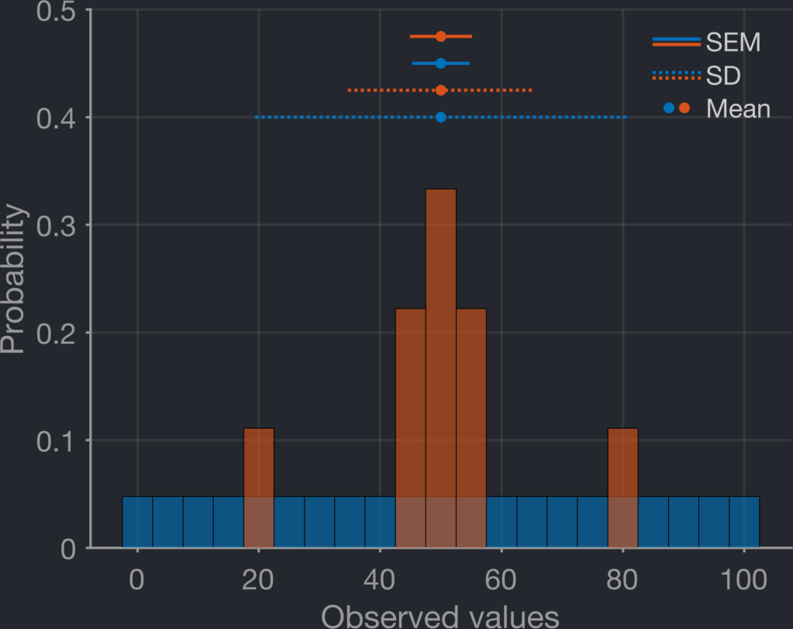

The standard error of the mean (SEM) should not be used when comparing distributions.
This is because it acts as a "confidence" bound for how well we have estimated the mean of the distribution
rather than describing the underlying distribution, which the related standard deviation (SD) does.
Because the SEM, unlike the SD, is divided by the square root of the number of observations, its value is
adjusted by how many times your distribution was measured, which the SD is stable to.
In the above animation, we repeatedly create some pseudo-random data from a Gaussian distribution
(μ = 50, σ = 10), starting by only pulling 10 samples, then increasing by 5 samples each time until
we reach 100 samples. As can be seen, the observed SD remains very close to the distribution's true value of
σ (10), while the observed SEM drops precipitously as the number of observations increases.
As an alternative, particularly extreme example, below we have two distributions in orange and blue.
The orange distribution is "peak-y" around a mean value of 50 (values = [20, 45, 46, 49, 50, 51, 54, 55, 80]),
while the blue distribution is just continuous values stepping from 0 to 100 in increments of 5.
As a result, since the orange distribution is comprised only of 9 values while the blue distribution is comprised
of 42 values, we see that while the SD (dotted lines above) somewhat correctly describes the shape of the distributions
(even though they are not Gaussian), the SEM (solid lines above) appears to suggest the orange distribution is actually
slightly tighter around the mean.

Of course, if you're comparing similar distributions with the same number of observations, the SEM will be
comparable across groups. Typically, that is rather rare in actual publications though, where SEM is often
mis-used.
To explore this further,
this function can be used to
compare how the observed mean, SD and SEM remain stable or change over various numbers of observations for any given input μ and σ
The function will return a table of results, and if requested, provide a figure plotting them.
I am far from the first person to be irked by mis-used SEM in scientific articles…See also
Nagele, BJI (2003) for a more in depth exploration.